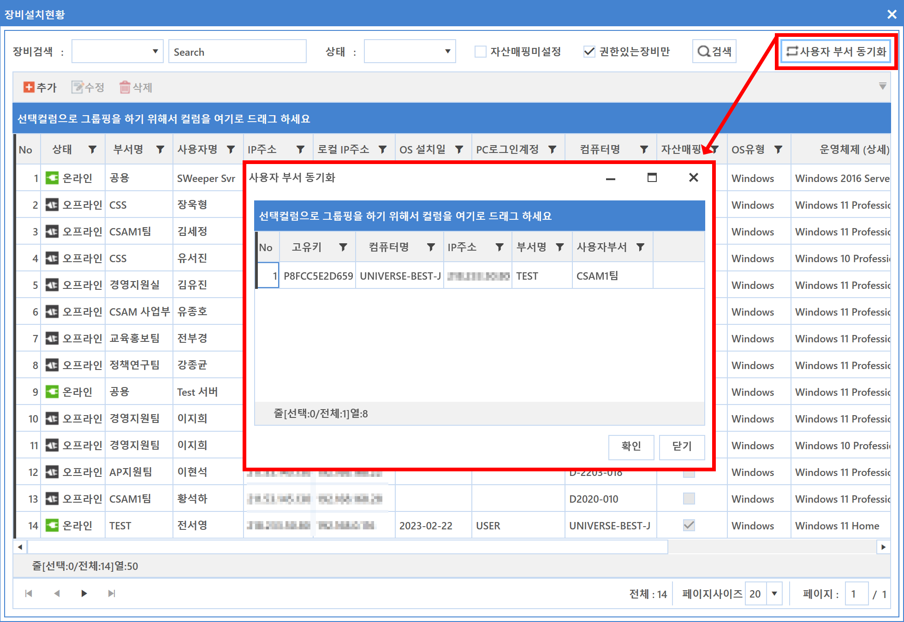

4-1-1-3. 사용자 부서 동기화
4-1-1-3. 사용자 부서 동기화
Source: https://www.sweeper.or.kr/etc/manual/4113.html
4-1-1-3. 사용자 부서 동기화
4. 일반정보 ›› 4-1. 장비관리 ›› 4-1-1. 설치현황 ››


조직내 사용자의 부서가 변경되는 인사이동이 있는 경우, 매핑된 장비의 부서가 자동으로 변경된 사용자 부서로 업데이트 되는 기능입니다.

적용 예
- 사용자 부서가 변경된 경우 아래와 같이 "사용자 부서 동기화"를 누르면 팝업이 발생하고, 변경되는 대상장비 리스트가 나타납니다.

동기화 되기 위한 조건
- 사용자 유형이 개인이어야 합니다.
- 사용자 부서가 존재해야 합니다.
- 장비에 대한 권한이 필요합니다.
참고사항
조직내 사용자의 부서가 변경되었고, 위 동기화 조건을 충족하는 장비 전체에 대해 관리자는 사용자 부서 동기화를 할 수 있습니다.
© Copyright SWeeper Inc.. All Rights Reserved